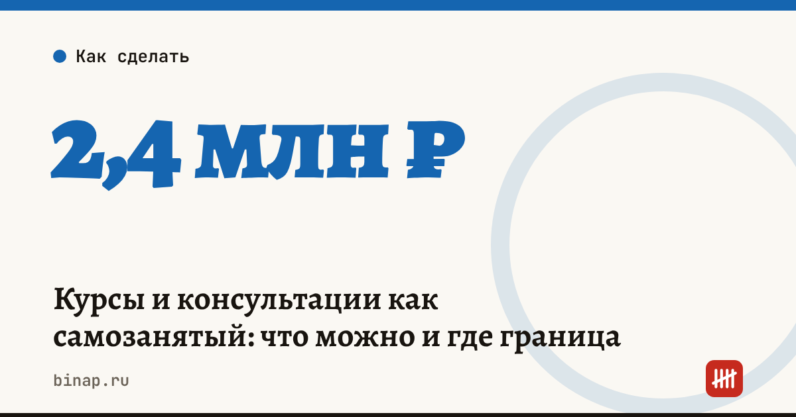

Курсы и консультации как самозанятый: что можно и где граница

Эксперт может продавать свои консультации, курсы и наставничество как самозанятый: это доход от собственной деятельности. Граница проходит там, где появляются сотрудники, доход больше 2,4 млн ₽ в год, продажа чужих курсов по агентской схеме или выдача документов об обучении. Тогда нужен ИП или организация.
Коротко
- Свои консультации, вебинары, курсы и разборы — можно, налог 4% с физлиц и 6% с компаний и ИП.
- Нанимать сотрудников по трудовым договорам самозанятый не может. Помощников — только по договорам услуг, без признаков трудовых отношений.
- Продавать чужие курсы по агентскому договору самозанятому нельзя.
- Лимит дохода — 2,4 млн ₽ в год. Запуск курса на 100 учеников по 25 000 ₽ уже выбирает лимит.
- Удостоверения о повышении квалификации и дипломы выдаются в рамках образовательной деятельности с лицензией — это не формат самозанятого.
Сроки, изменения и разборы для ИП и самозанятых — каждое утро в Telegram и MAX. Подпишитесь, чтобы не пропустить.
Что можно и что нельзя
| Ситуация | Самозанятому |
|---|---|
| Свои консультации и разборы | можно |
| Свой онлайн-курс через платформу | можно |
| Куратор по договору услуг | можно, если это не трудовые отношения |
| Куратор в штате | нельзя |
| Продажа курсов другого эксперта за процент | нельзя (агентская схема) |
| Выдача удостоверений о квалификации | нельзя без образовательной лицензии |
| Доход больше 2,4 млн ₽ в год | нельзя, нужен ИП |
Чеки: как не ошибиться
- Чек формируется в «Мой налог» на каждую оплату. Клиент — физлицо или компания, от этого зависит ставка.
- Если оплата проходит через платформу или сервис приёма платежей, проверьте в договоре с ним, когда деньги считаются полученными и кто формирует чек.
- При возврате денег ученику чек аннулируют — частые аннулирования привлекают внимание налоговой.
Запуск и лимит: расчёт
Пример (расчёт редакции, цифры условные). Курс за 25 000 ₽, два потока в год.
| Поток | Учеников | Выручка |
|---|---|---|
| Весна | 40 | 1 000 000 ₽ |
| Осень | 60 | 1 500 000 ₽ |
| Итого за год | 100 | 2 500 000 ₽ |
Осенний поток выводит доход за лимит 2,4 млн ₽. Регистрировать ИП нужно до этого потока, а не после. Сколько стоит ученик и окупится ли запуск — в калькуляторе стоимости ученика.
Платформа для курсов с приёмом оплаты и чеками: ссылка
Что сделать
- Проверьте свою модель по таблице выше.
- Посчитайте доход за год с учётом всех потоков и консультаций.
- Если близко к лимиту или нужна команда — сравните ИП на УСН и патенте: самозанятый или патент.
- Оформите договоры с кураторами и подрядчиками письменно.
Как получить вычет 10 000 ₽ и снизить ставку — вычет самозанятого. Все шаги — в разделе «Онлайн-школам и экспертам».
Частые вопросы
Может ли самозанятый продавать курсы через платформу? Да, если это ваш курс. Чек формируется на каждую оплату; порядок зависит от договора с платформой.
Можно ли привлечь куратора? По договору оказания услуг — да, например с другим самозанятым. Постоянный график, подчинение и оклад превращают такой договор в трудовой.
Что если доход превысит 2,4 млн ₽ посреди года? С дохода сверх лимита налог на профессиональный доход не применяется. Зарегистрируйте ИП и перейдите на другой режим заранее.